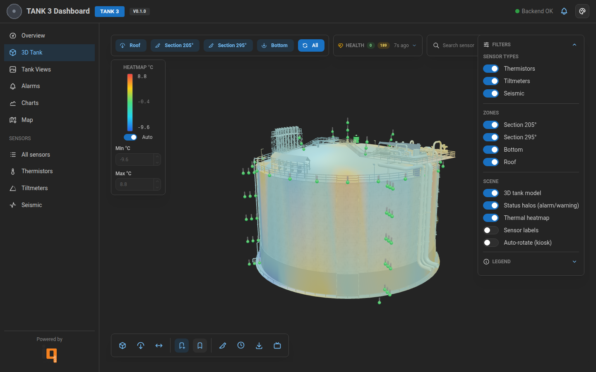

Custom Three.js scene
Cylindrical tank with sensor halos, alarm pulses, section views (roof, bottom, sections at 205°/295°) and camera presets.
Real-time monitoring & 3D visualisation for an LNG storage tank — 190+ thermistors, tiltmeters, seismic and inclinometer sensors, with a Three.js scene that turns sensor data into a live thermal heatmap.

Operators don't want a wall of numbers — they want to glance at the screen and instantly see whether the tank is healthy. Tank 3 Dashboard takes data from a legacy Firebird database and renders it as a live 3D model with colour-coded sensors, alarm states, a thermal heatmap and historical charts.
A FastAPI bridge sits between Firebird and the React app, translating proprietary tables into clean REST endpoints. The frontend is built around a custom Three.js scene with React Three Fiber, with separate views for the 3D tank, charts, map, and alarms. There's also a kiosk mode for the control room.
The thermal heatmap is the showpiece — sensor temperatures are interpolated onto the tank surface in a custom shader, with a configurable colour ramp and an auto-range mode that adapts to the actual temperatures in the tank. It runs at 60fps even on a low-power kiosk machine.
Cylindrical tank with sensor halos, alarm pulses, section views (roof, bottom, sections at 205°/295°) and camera presets.
Sensor temperatures interpolated across the tank surface with a configurable colour ramp and auto-range mode.
Per-sensor warning & alarm thresholds with colour states across every view, plus a recent-alarms feed.
Time-range picker, multi-sensor overlays, downsampling for long ranges — built on lightweight chart libs.
Top-down map with sensor placements and live status, useful for identifying clusters of warnings.
Auto-rotating fullscreen view for the control room, with health summary and rolling alarm ticker.
Next project
Drop-in STL cost calculator that breaks a print down to the cent.